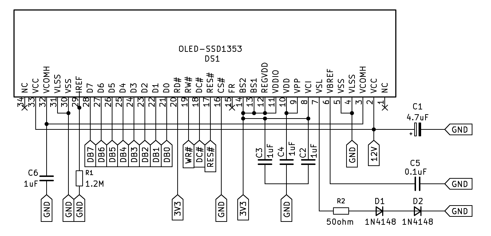
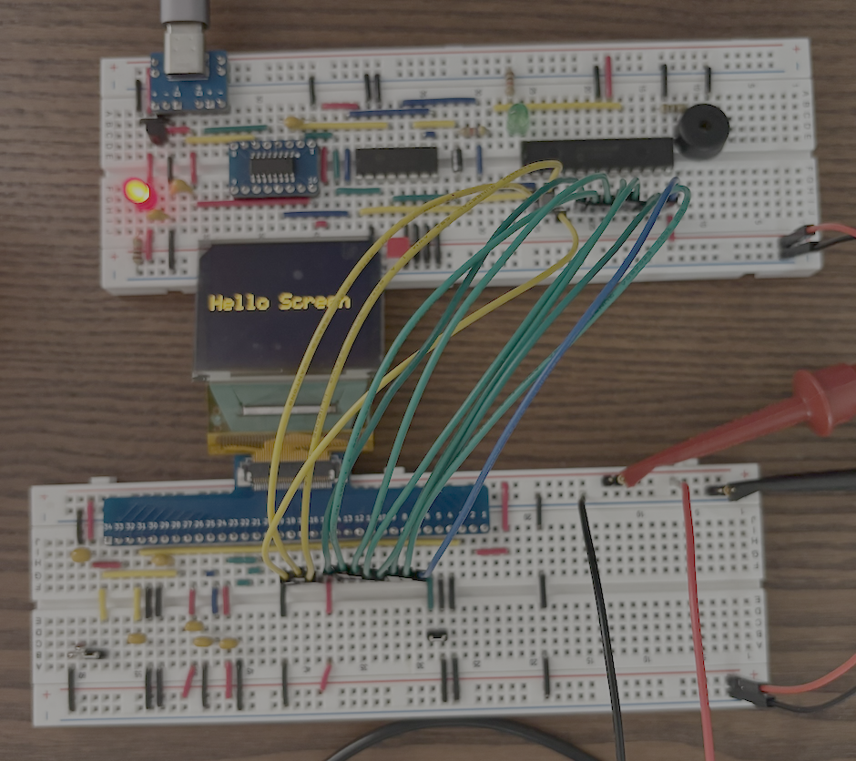

SSD1353
El controlador SSD1353 es usado para pantallas a todo color de tipo OLED con una dimensión de 160x128 pixeles configurado para trabajar en 8-bit 8080 Parallel Interface como los clásicos LCD 16x2, tambien tiene otros modos de configuración que no trataremos.
A continuación se muestra el circuito mínimo para hacer funcionar controlador SSD1353, y hay un par de puntos que quiero aclarar; Primero, usa dos voltajes de alimentación que son 3.3V para el controlador y 12V para los pixeles donde este último se logra con un boost. Segundo, se pueden usar otro tipo de condensadores además de los indicados por el fabricante como ha hecho adafruit con uno de sus productos usando el mismo controlador pero para una pantalla con otras dimensiones.
{kind=link}

Componentes
- Display NHD-1.8-160128B y su datasheet.
- R1 de 1.2M.
- R2 de 49.9ohm o 50ohm.
- D1 y D2 puede ser 1N4148 ó RB480K. Son diodos normales.
- C1 de 4.7uF con polaridad, ó 10uF ceramico (106).
- C2 de 1uF (105) ó 10uF (106), ambos ceramico.
- C3 y C4 1uF ceramico (105).
- C5 0.1uF ceramico (104).
- C6 de 4.7uF con polaridad, ó 1uF ceramico (105).
Construcción
Así quedo luego de armarlo en el breadboard y conectarlo a mi otro circuito que usa un AVR128DA28. No hacer caso al orden numérico de la PCB que usé cómo adaptador para conectar el circuito al flex (FPC). En este punto el circuito no usa los 12V generados por un Boost, sino usé una fuente de alimentación ajustable para probar. Es cierto que la foto no es la mejor.
